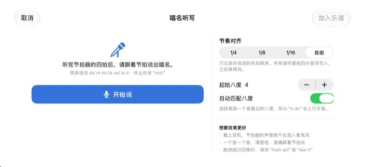
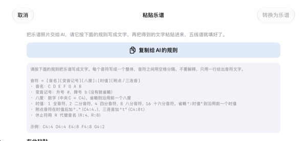

别再在脑子里数拍子，
用耳朵确认
把拿不准的两小节抄到五线谱上，轻点播放。预备拍一小节之后，跟着节拍器按原本的节奏和音高演奏出来。
所有功能免费，支持 iPhone 和 iPad。

写几个音，听一听
按住五线谱上下滑动可以换音，松手就放下音符。点播放，预备拍一小节后开始演奏。会发出声音，请留意音量。
数着数着拍子又乱了？
附点八分接十六分，旁边再来一组三连音，用手拍着数，不知不觉就对不上了。合唱排练前一晚，身边往往也没有钢琴。用 StaffSinger 把这两小节照抄到五线谱上，就能听到准确的节奏和音高。
节奏和音高，原样播放
预备拍一小节后，跟着节拍器的咔哒声演奏，正在发声的音符会以橙色标出。速度可在 40 到 200 BPM 之间调整，拍号可选 4/4、3/4、2/4、6/8、2/2、3/8。
同一拍上叠放音符就是和弦，会一起发声；最多可分三个声部书写。高音谱号、中音谱号、低音谱号和调号也都能切换。

开口唱名，就变成音符
节拍器数完四拍后，跟着拍子说出 do re mi，音符就会写进五线谱。踩着拍子说，还能按四分、八分、十六分记下时值。休止就说 rest。
唱名请用英语发音。语音只在设备上识别，不会保存。

乐谱照片交给 AI，结果直接粘贴
点 复制给AI的规则，连同乐谱照片一起交给 AI，再把它返回的文字粘贴回来，五线谱就填好了。格式见下表。
也可以拍下纸质乐谱放在屏幕上，边看边抄。

三步就能开始
- 1
挑出卡住的小节
打开 App 就是空白的两小节五线谱。
- 2
写下音符
按五线谱或弹钢琴键盘来输入。
- 3
点播放
预备拍之后，跟着节拍器播放。
粘贴文字时的格式
- C4:4
- 第 4 八度的 C，四分音符（中央 C 为 C4）
- D:8
- 省略八度时沿用前一个音的八度
- F#4:8 · Bb4:4
- 升号写 #，降号写 b
- E4
- 省略“:时值”时沿用前一个音的时值
- :1 · :2 · :4 · :8 · :16
- 全音符、二分、四分、八分、十六分音符
- C4:4.
- 附点音符
- C4:8t
- 三连音
- R:4 · R:8
- 休止符
在 App 里点“复制给AI的规则”，就会原样复制这套格式说明。音符之间用空格隔开。
所有功能都免费
免费
- 五线谱输入和两个八度的钢琴键盘
- 带预备拍和节拍器的播放
- 和弦与三个声部
- 调号与三种谱号
- 唱名语音输入
- 文字粘贴与参考照片
支持开发者
- 可以在设置中送一点小费
- 送小费不会解锁额外功能
不是订阅，每次送出都是一次性付款。
没有广告，也不需要注册账号。
常见问题
怎么输入音符？
先在工具栏选好时值，再按住五线谱上想要的高度。按住时会听到这个音，松手就放下音符。点键盘按钮，也可以用两个八度的钢琴键盘输入。
怎么做和弦？
打开工具栏的“和弦”按钮再输入，新音符会叠在选中的音符上，一起发声。
想改已经写好的音。
上下拖动音符改音高，左右拖动改所在的拍。选中音符后，用 ♯ ♭ 按钮按半音移动，用 8va 按钮按八度移动。
在哪里改速度和拍号？
在设置里，和谱号、调号放在一起。节拍器和预备拍的开关也在这里。
没有声音。
请检查静音模式和媒体音量。如果只是听不到节拍器，请到设置的“播放辅助”里确认节拍器已打开。
唱名输入总是不准。
戴上耳机，节拍器的声音就不会混进麦克风。一个音一个音、踩准拍子清楚地说。写错的音拖动一下就能改。
为什么需要相机？
只用来拍下纸质乐谱，作为参考照片显示在屏幕上。照片不会离开你的设备。不允许使用相机，也可以从照片图库导入。
支持哪些设备？
iOS 17 或更高版本的 iPhone 和 iPad，界面为横屏设计。
我的乐谱或声音会被上传吗？
不会。乐谱、照片和语音都留在设备上，没有网络也能使用。只有匿名的使用统计和崩溃报告会发送到 iCloud，用来改进 App。
怎么联系开发者？
请发邮件到 leeo@kakao.com，通常 2 到 3 个工作日内回复。也欢迎在 GitHub 的 M1zz/StaffSinger 提交问题报告和功能建议。
有问题或建议，请写信到 leeo@kakao.com。